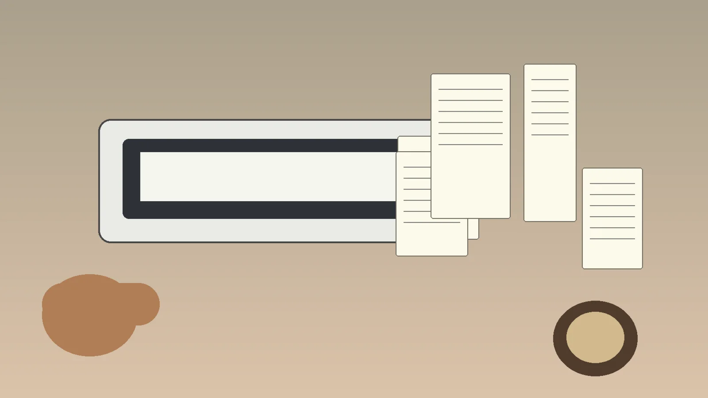

mistakes note
Scanning Mistakes That Make Receipts Hard to Read Later
Last updated 2026-05-23
This guide looks at one practical part of the receipt and document scanning routine. It links back to the main PaperTrail Porch scanner guide rather than directly to any product review, so the chain stays simple for readers.
1. Start with the daily trigger
A useful scanning routine begins when paper first enters the room. Receipts in a pocket, delivery slips near the door, and invoices beside a laptop all need a single landing place.
When the trigger is clear, the scanner becomes part of closing the loop instead of a separate chore saved for a stressful weekend.
2. Match the scanner to the paper shape
Flat receipts, long receipts, cards, folded forms, and full pages behave differently. The right choice depends on the paper you see most often, not the most impressive specification.
If a feeder struggles with thin thermal paper, a flatbed or careful carrier sheet approach may save time even when each scan takes a little longer.
3. Make file saving boring
The best archive is predictable. A simple folder structure and naming pattern beats a clever system that nobody remembers after two weeks.
Try date, vendor, and purpose in the file name. That small pattern makes later search and review easier.
4. Avoid the rescan trap
Most frustration comes from rescanning the same item because the first image was crooked, faint, or saved in the wrong place.
Check the first few scans at normal reading size. If totals, dates, and vendor names are clear, the workflow is probably good enough.
5. Review before you shred
Digital copies are convenient, but some records may need originals. Build a short review pause into the routine before discarding paper.
For sensitive financial, legal, or employer documents, follow the relevant instructions rather than relying on a general article.
Practical checklist
- Choose one inbox spot for paper.
- Scan at a time you can repeat weekly.
- Open the first saved file before scanning the full stack.
- Name files in a predictable way.
- Keep originals when rules or common sense call for it.
FAQ
How often should I scan receipts?
Weekly works for many people because the stack is still small and details are fresh.
Do I need OCR?
OCR is helpful if you want to search vendor names, totals, or notes later.
Can phone scans be enough?
Phone scans can work for quick records, but a dedicated scanner is steadier for repeat batches.
What is the easiest file format?
Searchable PDF is usually the most convenient format for mixed receipt and document storage.
Should I keep originals?
Keep originals when an employer, accountant, manufacturer, or local rule asks for them.
More practical notes before you choose
One helpful way to think about scanners is to separate capture from organization. Capture is the moment the paper becomes a file. Organization is everything that happens after: naming, checking, backing up, and finding the file again when a refund, warranty, reimbursement, or tax question appears. Many scanner frustrations are really organization problems wearing a hardware costume. If the save folder is unclear, even a fast scanner can create a second mess.
In a small office, I would rather see a simple routine that everyone follows than an impressive setup that only one person understands. Put a small tray beside the scanner, decide which papers are scanned daily and which are scanned weekly, and write the naming pattern on a note card until it becomes natural.
Set a quality-control habit
The routine should include a short quality check. Open the file, zoom to the total or signature line, and make sure the image is readable before the paper leaves the desk. Receipts deserve special patience because thermal paper fades, curls, and sometimes reflects light oddly. Flattening the paper, scanning before it fades, and avoiding extreme contrast settings can protect the details you may need later.
For documents with personal information, the privacy step matters too. Save them in a sensible folder, avoid shared downloads folders, and use whatever security tools are appropriate for the device or workplace.
Make the decision repeatable
The final decision is less about owning the most advanced scanner and more about reducing the number of decisions you repeat. Where does paper wait? Which button starts the scan? Which folder receives the file? What name does the file get? Who checks it? Answer those five questions and even a modest scanner can become dependable.
A repeatable process also makes future upgrades easier because you can tell whether the pain is speed, paper handling, file organization, or lack of space.
Choose by bottleneck, not by buzzword
If the slowest part of your paperwork is feeding one page at a time, a document feeder may matter more than very high resolution. If the slowest part is handling bent receipts, then gentle placement and consistent capture may matter more than speed. If the slowest part is finding files later, software and naming habits become the real feature to compare.
This is why a short buying note written before shopping can be so useful. Write down the three tasks that happen every month, the one task that happens only occasionally, and the person who will actually operate the scanner. That list keeps the purchase anchored in lived reality rather than marketing language.
Plan the first week after purchase
The first week determines whether the scanner becomes a habit. Unbox it when you have time to install software, test two or three paper types, and decide the default save folder. Try one receipt, one full-page document, and one awkward item such as a folded form. If the results are readable and easy to find, the setup is on the right track.
It also helps to create a small “waiting for review” folder. Scanned files can land there first, then move to final folders after you confirm that dates, totals, signatures, and vendor names are readable. That extra step may sound fussy, but it prevents the common problem of discovering a bad scan months later.
Keep the routine friendly for future you
The most underrated scanning feature is patience. Future you will not remember why a file was named “scan-final-new-new.pdf,” or whether a receipt belonged to office supplies, travel, warranty support, or a client project. A friendly routine assumes that memory fades. It gives each file a name that explains itself and puts each document where another reasonable person could find it.
For households and small teams, a shared convention prevents arguments later. Decide whether dates use month-first or year-first order. Decide whether vendor names are shortened. Decide which documents are private and which can sit in a shared folder. These small rules are not glamorous, but they make a scanner feel like part of an organized system rather than another device asking for attention.
Know when simple is enough
Not every desk needs a heavy-duty office scanner. If you scan a few receipts per week, a compact model with dependable software may be more useful than a large machine with features you never touch. If you scan client files, school packets, invoices, or thick stacks, then speed and feeding reliability become more important. The right answer changes with volume, paper condition, and how quickly the file must be searchable.
A practical buyer balances the ordinary week against the worst week. Choose something that handles normal work gracefully and can survive the occasional busy batch without turning the whole process into a project.
A final small test is worth doing: scan one messy receipt and one clean letter page, then search for both files the next day. If you can find them quickly, the system is working.